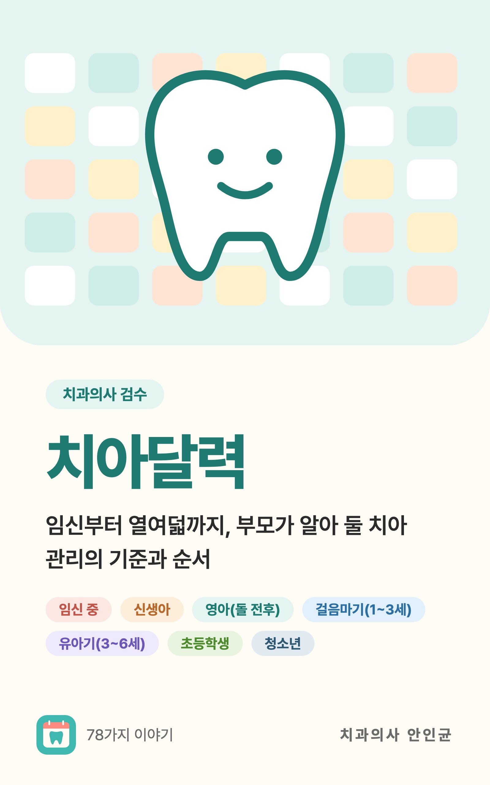

아이 이가 검게, 노랗게 보일 때: 착색과 변색의 흔한 원인
아이 이 색이 변했다면 원인은 여러 가지예요. 잇몸 쪽 검은 착색, 철분제 착색, 넘어진 뒤 변색, 노란 영구치, 하얀 반점의 차이와 집에서 하지 말아야 할 미백을 정리했어요.
한눈에 보기
- 잇몸 쪽 검은 점은 해롭지 않고 치과에서 지워요
- 숯 치약·베이킹소다 같은 집 미백은 금지예요
- 잇몸이 붓거나 고름·통증·열이 있으면 바로 치과
양치를 해 주다가 이에 검은 점이나 줄이 보이면 덜컥 충치부터 걱정되죠. 이가 회색으로 변했거나, 새로 난 영구치가 유난히 노래 보일 때도 마찬가지예요. 아이 이 색이 변하는 원인은 여러 가지이고, 대부분은 치과에서 확인하면 해결할 수 있어요. 흔한 원인과 집에서 할 일을 정리했어요.
이 색이 변하는 흔한 원인
충치인지 착색인지는 집에서 구분하기 어려워요. 그래도 흔한 원인을 알아 두면 덜 놀라고, 치과에서 설명을 들을 때도 도움이 돼요.
- 잇몸 쪽 검은 착색: 잇몸 가까운 치아 목을 따라 검은 점이나 선이 줄지어 생겨요. 입안 세균과 관련이 있고 해롭지 않아요. 치과에서 닦아 내면 없어지지만 다시 생길 수 있어요. 이런 아이들은 오히려 충치가 적은 경향이 있다는 보고도 있어요. 다만 착색이 충치를 막아 주는지는 알 수 없어요.
- 철분제 착색: 철분 보충제 같은 금속 성분이 치아 겉면을 물들인 거예요. 겉에 묻은 착색이라 치과에서 비교적 쉽게 지울 수 있어요.
- 넘어진 뒤 변색: 유치를 다친 뒤 회색, 분홍, 노란색으로 변할 수 있어요. 몇 주에서 몇 달에 걸쳐 옅어지기도 하고, 변색만으로 신경치료를 하지는 않아요. 다만 경과는 지켜봐야 해요.
- 영구치가 더 노랗게 보임: 유치와 영구치는 법랑질(이 겉면) 두께가 달라요. 그래서 이를 갈 무렵에는 한 입안에서도 새로 난 영구치가 옆의 유치보다 노랗게 보일 수 있어요.
- 하얀 반점·줄무늬: 영구치가 만들어지는 약 8세까지 불소를 너무 많이 삼키면 생기는 치아불소증일 수 있어요. 대부분 가벼워요.
예전에는 검은 착색을 양치를 잘 못해서 생긴 것으로 오해하기도 했어요. 지금은 해롭지 않고 보기에만 신경 쓰이는 문제로 봐요. 부모 탓이 아니니 마음 놓으세요.
집에서는 긁지 말고 이렇게 해 주세요
- 검은 점은 긁거나 문지르지 않아요. 손톱이나 도구로 긁으면 이 겉면이나 잇몸이 다칠 수 있어요. 치과에서 닦아 내요.
- 정기검진 때 관리받아요. 검은 착색은 다시 생길 수 있으니 검진 때마다 확인하고 필요하면 다시 닦아 내요.
- 철분 시럽은 볼 안쪽으로 조금씩 줘요. 아이를 세워 앉히고 주사기로 볼 안쪽에 조금씩 넣어 삼킬 시간을 줘요. 목 뒤쪽으로 쏘지 않아요. 먹인 뒤에는 물을 마시게 하거나 양치해요.
- 넘어진 뒤 색이 변하면 기록해요. 치과에서 사진을 남기고 경과를 봐요. 집에서도 날짜와 사진을 남겨 두면 변화를 비교하기 쉬워요.
- 불소치약은 정해진 양만큼만 짜 줘요. 3세 미만은 쌀알만큼, 3~6세는 완두콩만큼이에요. 부모가 짜 주고, 닦은 뒤에는 뱉게 해요.
유치와 영구치가 섞여 있는 시기에 전체 미백을 하면, 나중에 영구치가 다 난 뒤 색이 맞지 않을 수 있어요. 아이 이 색이 신경 쓰인다면 먼저 원인을 치과에서 확인하는 게 순서예요.
자주 묻는 질문
검은 점이 있으면 충치인가요?
잇몸 쪽을 따라 줄지어 생긴 검은 점은 해롭지 않은 착색일 수 있어요. 하지만 충치도 갈색이나 검게 보일 수 있어서 집에서 구분하기는 어려워요. 치과에서 확인받으세요.
닦아 냈는데 또 생겼어요.
검은 착색은 다시 생길 수 있어요. 아이 잘못이 아니고 해롭지도 않아요. 정기검진 때마다 확인하고 필요하면 다시 닦아 내면 돼요.
새로 난 앞니가 유난히 노래요.
유치와 영구치는 법랑질 두께가 달라서 이를 갈 무렵엔 색이 달라 보일 수 있어요. 대부분 정상이지만, 색이 걱정되면 정상 범위인지 치과의사와 상의하세요.
철분제를 먹이면 이가 계속 검게 되나요?
철분제 착색은 겉에 묻은 것이라 치과에서 비교적 쉽게 지울 수 있어요. 아이를 세워 앉혀 볼 안쪽으로 조금씩 먹이고, 먹인 뒤 물이나 양치로 마무리하면 도움이 돼요. 철분제를 끊을지는 소아과와 상의하세요.
이럴 땐 치과에 가 보세요
- 변색된 이 주변 잇몸이 붓거나 고름 구멍이 생겼을 때
- 변색된 이를 아파하거나 열이 날 때(바로 가 보세요)
- 이에 검은 점이나 갈색 얼룩이 새로 보일 때
- 넘어진 뒤 이 색이 변했을 때
- 영구치가 유난히 노랗거나 하얀 반점·줄무늬가 보여 걱정될 때

한국어 전자책 · 치과의사 안인균
지금 무엇을 먼저 해야 할지, 책으로 차근차근
『치아달력』은 임신부터 열여덟까지의 치아 관리를 78편으로 다룹니다. 수유와 양치 거부, 유치 충치, 진정 치료와 외상에서 선택의 이유, 지켜볼 조건, 진료를 앞당길 변화를 설명합니다. 시기별 차례와 주제별 찾아보기로 필요한 부분부터 읽어 보세요.
시기마다 알림으로 받아 보세요
치아달력 앱에 생일(또는 출산 예정일)을 넣으면 이 글들이 필요한 때에 맞춰 알림으로 와요. 가입 없이 무료로 쓸 수 있어요.
출처
- AAPD · Policy on the Use of Dental Bleaching for Child and Adolescent Patients (2023)
- Children (Basel) · Association Between Chromogenic Black Stain and Dental Caries in Children: Systematic Review and Meta-Analysis (2025)
- IADT · Guidelines for the management of traumatic dental injuries: 3. Injuries in the primary dentition (2020)
- ADA · Charcoal and charcoal-based dentifrices: A literature review (JADA) (2017)
이 글의 정보는 일반적인 교육 목적이며 진료를 대체하지 않습니다. 아이의 상태에 대해서는 치과의사와 상담하세요.